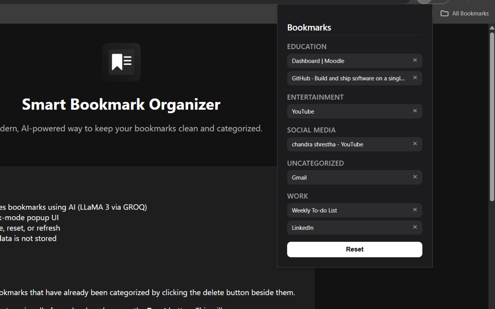

Features
- Auto-categorizes bookmarks using AI (LLaMA 3 via GROQ)
- Minimalist, dark-mode popup UI
- One-click delete, reset, or refresh
- Fully private – data is not stored
You can delete bookmarks that have already been categorized by clicking the delete button beside them.
To refresh and re-categorize all of your bookmarks, press the Reset button. This will:
- Clear all existing categorized bookmarks
- Re-fetch all your Chrome bookmarks
- Re-run AI categorization from scratch
- Display the newly categorized results again
Use the Reset option carefully — it removes all previously categorized entries.
Screenshot
How to Install
- Download the
.zipfile - Go to chrome://extensions
- Enable "Developer mode"
- Click "Load unpacked" and select the extracted folder
Get in Touch
View the source on GitHub
For feedback, contact shrestharujan15@gmail.com